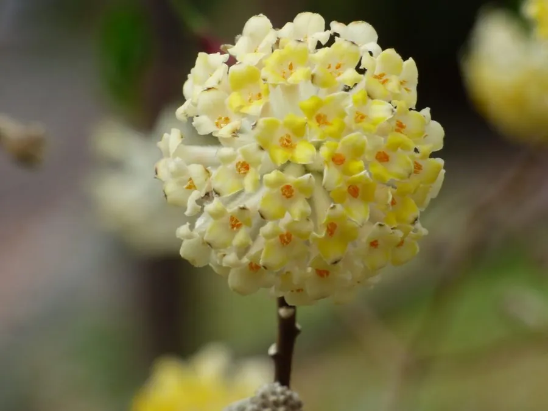

灌木与花木 · 植物界
结香 Edgeworthia chrysantha

瑞香科落叶灌木，枝条柔软可打结，早春先花后叶，金黄头状花序芳香浓郁，树皮纤维可造纸。
- 分类
- 门被子植物门纲木兰纲目锦葵目科瑞香科属结香属
- 栖息环境
- 海拔 1500 米以下的山坡林下、灌丛与溪边，喜温暖湿润、耐半阴
- 地理分布
- 中国河南、陕西、江苏、浙江、安徽、江西、湖北、湖南、四川、云南等地
- 保护级别
- 暂无评估；中国未列入国家重点保护野生植物名录
物种志
结香为瑞香科结香属落叶灌木，高 1–2 米，枝条棕红色，常呈三叉状分枝，柔软可弯曲打结。叶片互生，长椭圆形至披针形，聚生于枝顶，入秋脱落后留下明显的叶痕。花黄色，由数十朵小花组成下垂的头状花序，先花后叶，花期 3–4 月，香气浓郁；果实为核果，卵形，果期 8 月。
结香原产中国长江流域及河南、陕西、云南等地，生于山坡林下与灌丛。它喜光，也耐半阴，喜温暖湿润，适宜疏松肥沃、排水良好的土壤。枝条柔软，民间常将其打结，寓意喜结连理。树皮纤维坚韧，是制作宣纸、钞票纸与人造棉的原料；花可提取芳香油，全株入药，有舒筋活络之效。早春黄花先于叶片开放，是庭院中重要的早春芳香花木。
形态与习性
- 株高1–2 m，枝条三叉状、柔软可打结
- 花期3–4 月，先花后叶、香气浓郁
- 果期8 月，核果卵形
- 光照喜光，也耐半阴
- 水分喜湿润，忌积水
- 土壤疏松肥沃、排水良好的壤土
- 主要用途早春观花，树皮纤维造纸，全株入药
趣味知识
- 结香的枝条柔软，可以弯折打结而不断，因此又名“打结花”。
- 民间常把结香枝条打成结，寓意喜结连理、爱情长久。
- 结香树皮纤维坚韧，是制作宣纸与钞票纸的原料之一。
- 它先花后叶，早春金黄的花球在枝头下垂，香气浓郁。